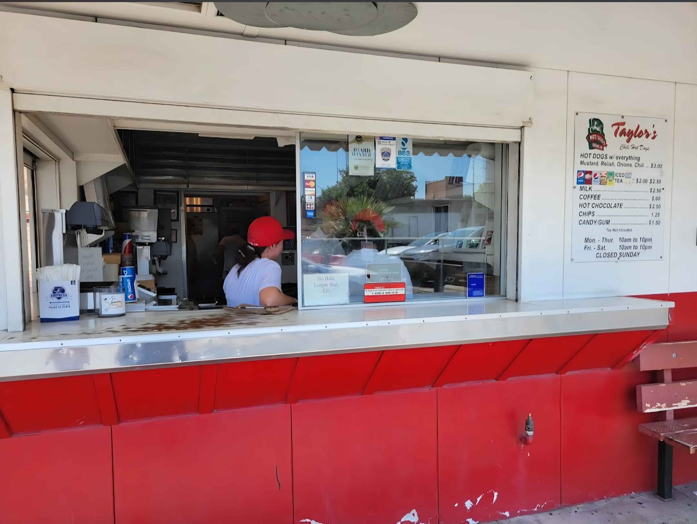
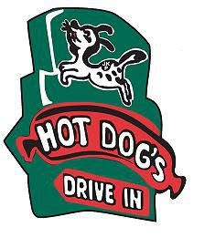

Our Story
Since 1952

Taylor Brothers Hot Dog Stand opened in Visalia in 1952. It was started by the grandfather and great uncle of the current owner, and it began a couple of blocks away at Maple Avenue and Union Street. In 1988 it moved to its current spot on N Encina St.
Meet the owner
Matthew Taylor is the third generation of his family to run the stand. He keeps the menu basic and simple, which is how the stand keeps its prices low.
What we stand for
The family motto goes back to the founder: a quality product at a good price with fast, friendly service.
What makes it special
- Homemade chili from a secret family recipe
- Flavorful onions on every chili dog
- A short menu and low prices
- The same old-school feel and neon sign for decades

Timeline
- 1952: The stand opens in Visalia
- 1988: The stand moves to 206 N Encina St
- Today: Third-generation owner Matthew Taylor runs it